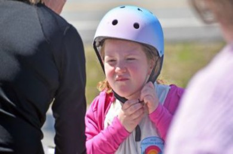
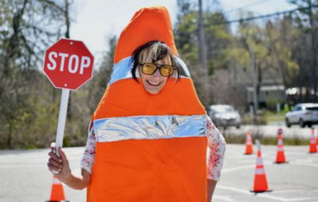
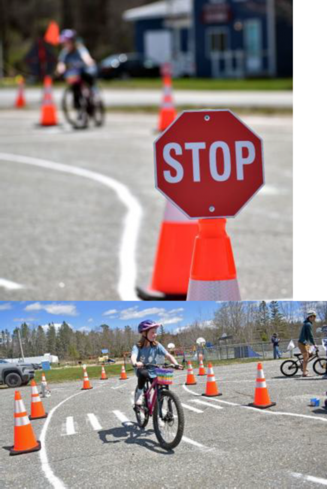

The training wheels came off for Sullivan Bike Rodeo
Children learned how to properly wear a bicycle helmet, maintain balance and observe

crosswalks and other road rules on a simulated course during a Kids Bike Rodeo at the Sorrento Sullivan Recreation Center May
9. The event was hosted by the Town of Sullivan Parks and Recreation Committee in collaboration with the Bicycle Coalition of Maine.
After getting fitted for appropriately sized helmets and
having their bikes assessed, dozens of kids tried their hands at the event’s main feature: a “continuous flow” skills course. This course featured miniature Maine Department of Transportation road signs designed for kids to practice essential maneuvers in a controlled environment observed by volunteers.
Instruction covered proper stopping, passing, hand maneuvers, scanning for traffic, emergency breaking and more.
Bicycle Coalition of Maine educator Erik Da Silva said it’s a critical lesson for kids and adults alike, emphasizing that bike riders are expected to observe the same rules of the road as everyone else, and learning safety fundamentals at an early age can guide kids towards a safer riding future.
“This rodeo is designed to be a closed course to get kids learning about the basics away from cars and trucks, and many of the road rules we are familiar with from driving still applies — you still yield for pedestrians, stick to the same lanes, etc.,” Da Silva said. “This course has the same features you would find on a real road; for instance, there’s a crosswalk, two lanes and one lane roads for traffic and an intersection with multiple directions.”
With high fuel costs and nicer weather on the horizon, he said he expects more bicyclists to be on the road this spring and summer. He advocates bicycle riding for those looking for a healthier, less costly alternative to vehicles.
“Cabin fever season is done; for many people it’s time to come out into the sun,” Da Silva said. “This state is a great place to ride. There are so many corners and nooks you can ride out and explore, and it’s more efficient than using a car.”
He said he was excited to see so much participation at the event.
“It’s great to see parents and kids come out on this beautiful day; just looking around you can take in the community,” Da Silva said.
After a few loops on the course, Rita Grace Lowry, 9, shared she learned a lot through the
day’s activities.
“I’ve done one bike rodeo before, and this one is a lot more complex and fun because of all the stops and markings,” she said. “I learned what the yield is for.”
Sullivan Parks and Recreation Committee Chairperson Bonnie Sparks said this is the first year the committee is running the event, and judging by the turnout and response, she anticipates more like it in the future.
“I certainly am open to doing this again,” Sparks said. “Maybe it will take us a couple of rodeos for us to really nail down the process, but by my standards, this has been a huge success.”
The committee’s mission is to provide safe, fun and educational outdoor opportunities
for Sullivan residents and guests from the surrounding communities.
For more information about upcoming committee events, contact the Sullivan Town Office at 422-6282.

